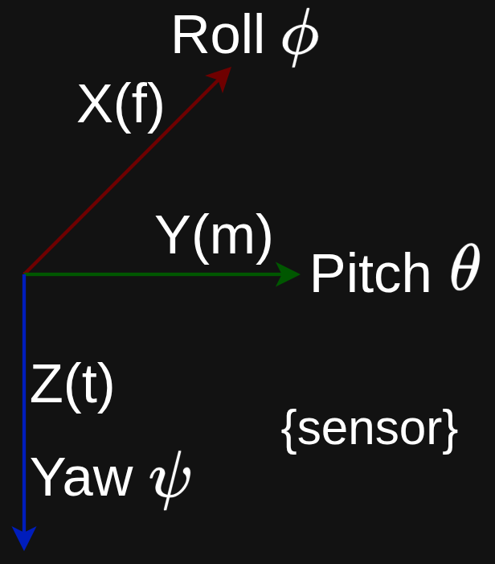

☰
Pitch & roll
Overview
[AN3461.pdf]
- Choosing the sequence roll, then pitch, then yaw Eqs 6 to 8
- Normalising each accelerometer reading so that the resultant direction of the unit vector within a unit sphere can be found more easily.

Equations:
$$\begin{align*}
tan \,\phi_{xyz} &= \frac{a_y}{a_z} \\
tan \,\theta_{xyz} &= \frac{-a_x}{a_y \, sin\,\phi + a_z \, cos\,\phi} \\
&= \frac{-a_x}{\sqrt{a_y^2 + a_z^2}} \\
\end{align*}$$